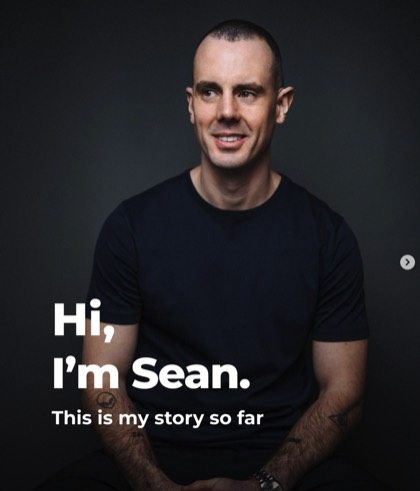

Premium Complete Blood Test
Broad insight into blood count, inflammation, liver, kidney, cholesterol and metabolic markers.
View testPrivate blood testing with clinical care
AIO Medicals helps patients book private blood tests, phlebotomy appointments and targeted health screens with a professional clinic team.
Both consultation appointments are 30 minutes and cost £10.
AIO Medicals is the provider
AIO Medicals provides in-clinic blood tests, health screening and phlebotomy appointments with a straightforward, professional approach led by founder Barry Logan.
Blood test services
Browse AIO Medicals’ in-clinic blood tests by health concern, then request the appointment that fits what you need.
Broad insight into blood count, inflammation, liver, kidney, cholesterol and metabolic markers.
View testChecks red cells, white cells and platelets, often used when investigating tiredness or infection.
View testTSH, T4 and related markers for patients exploring fatigue, weight change or temperature sensitivity.
View testCommon nutrient checks for low energy, dietary changes, winter health or supplementation plans.
View testLipid markers that support conversations about cardiovascular risk and lifestyle choices.
View testBlood sugar checks for monitoring long-term glucose levels and metabolic health.
View testHormone and wellbeing panels for cycle health, perimenopause, fertility and general screening.
View categoryTargeted profiles including testosterone, prostate-related markers and cardiovascular risk checks.
View categoryFerritin, iron status and blood count markers for patients investigating tiredness or deficiency.
View testSimple patient pathway
Select a panel based on your health concern or ask the clinic to help you choose.
A trained clinician confirms your details and collects the blood sample in a short appointment.
Samples are processed by a laboratory and results are returned with clear next-step guidance.
Performance & lifestyle blood testing
AIO Medicals works with Willers Coaching to connect lifestyle change, training and alcohol-free momentum with professional clinic-led blood test appointments.

Health & wellness blog
Short articles for people comparing private blood tests, health screening and wellness options in Royal Tunbridge Wells, Mayfield and nearby areas.

Mayfield & Tunbridge Wells
See how a private wellness blood test can help you build a more useful health baseline, track change over time and book with more confidence.
Read the articlePerformance guide
For active patients, the right blood test can support training, recovery and better decision-making. This guide explains where to start.
Read the articleMen's health guide
Explore when a men's health blood test is useful, what it can help monitor, and how to book a private route that actually matches your goals.
Read the articleWhy patients choose AIO
Blood tests can feel confusing, especially when people are unsure which panel they need or what happens after the sample is taken. AIO Medicals keeps the process simple, careful and human from the first enquiry.
Clinic locations
Appointments are available in Royal Tunbridge Wells and Mayfield. The clinic will confirm the most suitable location when arranging your appointment.
Royal Tunbridge Wells
Mayfield
Book with AIO Medicals
Choose the appointment that fits you best. Both consultation options are 30 minutes and cost £10.
If you are unsure which test to choose, book a consultation first and AIO Medicals will guide you.
Patient questions
Many private blood tests can be booked directly. AIO Medicals will help confirm which test is suitable before your appointment is arranged.
Turnaround depends on the panel and laboratory processing time. AIO Medicals will confirm the expected result window before booking.
Yes. AIO Medicals can provide a phlebotomy appointment for patients who need a professional blood draw, including agreed external kit pathways where appropriate.
AIO Medicals will explain how your results will be returned before you book. Some results may need follow-up with your GP or an appropriate specialist.